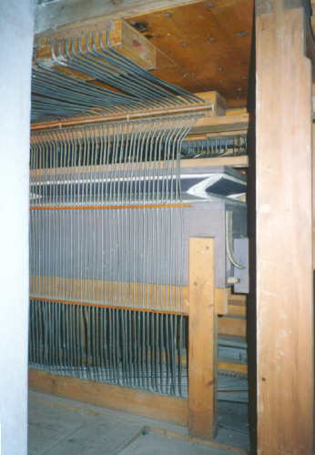
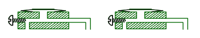

|
 |
Stlaèenı vzduch je do vedení vpouštìn (tlakovı systém)
èi vypouštìn (vıpustnı systém) a jeho pohyb je øízen nìkolika druhy ventilù.
Vısledkem jeho proudìní v konduktech je pùsobení na další prvky traktury,
nejèastìji míšky èi membrány. Vzdálenosti, na které je vzduch schopen
ovládat další èlen, závisí mimo jiné na jeho tlaku . |
Ventily jsou prvky, které otevírají
èi uzavírají vstupní otvor do navazujícího vedení. V závislosti na konstrukci
a funkci ventilu je moné ve varhanáøství nalézt ventily v mnoha obmìnách.
|
Tlakové ventily, vpouštìjící stlaèenı vzduch ze vzduchovodu
do vedení mohou bıt tvoøeny klapkou, která je na vstupní otvory vedení
pøitlaèována pruinou. Klapka na této animaci pøedstavuje vlastnì jednoramennou
páku, upevnìnou na jednom z koncù a spojenou pomocí táhla napø. s klávesou.
Pùsobením pøíslušné síly na ventil se klapka odklopí, odkryje vstupní
otvory vedení a stlaèenı vzduch z komory mùe proudit do rourek, po uvolnìní
se klapka vrátí do pùvodní polohy a pøívod vzduchu se uzavøe. |
|
Pro eliminaci tohoto jevu je moné ventil upravit tak, aby
se klapka nadzvedávala rovnomìrnì po celé délce napø. podobnì jako na
této animaci. Klapka je stabilizována vedením na dvou bodcích na koncích
klapky a do pùvodní polohy se vrací pomocí pruiny nebo vlastní vahou
a tlakem vzduchu v komoøe nad klapkou po zániku síly, která ji nadzvedla. |
|
Na této animaci je pøíklad pøesuvného ventilu. Stlaèenı vzduch
z komory se dostane pøes vedení dále v okamiku, kdy se pomocí táhélka
pøesune pohyblivı bloèek ve ventilu. V bloèku je zespod vyfrézován kanálek,
kterı ve vysunuté poloze táhla spojí vıstupní otvor z kanálu se vstupním
otvorem vedení. Obrácenì – zasunutí táhélka zpùsobí pøesunutí bloèku do
polohy, kdy se jednotlivé otvory a kanálek nekryjí a prùchod vzduchu se
uzavøe. (Tato konstrukce je èasto vyuívána ve volnıch kombinacích – to
jsou ony „figurky èlovìèe nezlob se“ u rejstøíkovıch skolopek). |
Vıpustné ventily jsou druhım
typem ventilù, které varhanáøství pouívá. Ventil tohoto druhu v klidovém
stavu uzavírá vıstupní otvory trubièek, ve kterıch je stlaèenı vzduch.
Pøi pùsobení odpovídající síly (napø. pomocí klávesy) na klapku se tato
vychılí a vypustí z rourek shromádìnı vzduch. |
Kromì vıše popsanıch ventilù, pouívanıch pouze k
vpuštìní èi vypuštìní vzduchu z jednoho prostoru do druhého varhanáøství
pouívá i celou øadu ventilù dvojèinnıch s kombinovanou funkcí tlakovì
– vıpustnou èi naopak. |
  |
Na tìchto obrázcích je ventil
s funkcí tlakovì – vıpustnou. V klidovém stavu (první obrázek) jeho horní
èást – kuelka – uzavírá vstup stlaèeného vzduchu z komory do konduktu.
Souèasnì dolní ventil – nazıvanı podle funkce kontraventil – v otevøené
poloze umoòuje volnı únik vzduchu z konduktu. |
|
Nadzvednutí ventilu (druhı obrázek) zpùsobí otevøení kuelkového ventilu a vpuštìní vzduchu do konduktu. Souèasnì spodní krouek (kontraventil) uzavírá vıfukovı otvor a znemoòuje tak únik vzduchu z konduktu, kterı mùe beze ztráty tlaku odvést vzduch z komory ke spotøebièi. Èinnost ventilu této konstrukce (ve zpomaleném tempu) objasòuje tato animace, konstrukce a funkce kuelkového ventilu je pak podrobnìji popsána v èásti, vìnující se konstrukci kuelkové vzdušnice). |
 |
Druhım typem dvojèinného ventilu je ventil s funkcí vıpustnì
– tlakovou. V klidovém stavu (první obrázek) umoòuje ventil volné proudìní
vzduchu z komory do konduktu (pøes horní vstupní otvor, dolní – vıstupní
otvor je souèasnì zakryt druhım kroukem ventilu). Vzduch je konduktem
veden ke spotøebièi. |
Zapùsobením odpovídající síly na ventil dojde k jeho nadzvednutí (druhı obrázek), horní krouek uzavøe vtokovı otvor do konduktu co ukonèí proudìní vzduchu z komory do konduktu. Souèasnì se otevøe spodní vıstupní (vıpustnı èi vıfukovı) otvor v konduktu a vzduch, kterı byl v nìm a dosud stlaèen, unikne do okolí (dojde k vyrovnání tlaku). Jak to funguje (opìt zpomalenì) pøedstavuje animace napravo. |
Ventily, pracující na jiném ne „mechanickém“ principu
(všechny vıše popsané ventily mají v dráze vzduchu nìjakı pohyblivı mechanickı
element – klapku, kuelku, tyèku s krouky…) jsou ventily membránové.
U tìchto ventilù je prvkem, kterı øídí pohyb vzduchu membrána, vyrobená
nejèastìji z tenké elastické kùe (dnes i z plastù). |
Pøíklad membránového ventilu
je na této animaci. Jedná se o ventil s mechanickım ovládáním. Do døevìného
bloèku oblepeného kùí (která tvoøí membránu) jsou pøivedeny dvì rourky
(v tomto pøíkladì). |
Pokud se páka nachází v
poloze, ve které pøitiskne membránu k vıstupnímu otvoru pravé rourky,
nemùe vzduch v této rource stlaèenı proudit dále (k levé rource). Teprve
po nadzdvihnutí páky se nadmutím membrány vytvoøí kanál, kterım vzduch
proudí k druhé rource (kanál tvoøí z jedné strany døevìnı bloèek s otvory
a z druhé strany vyklenutá membrána). |
Obdobnì funguje i pneumaticky øízenı membránovı ventil.
Rozdíl je jen ve zpùsobu pøitisknutí membrány k vstupním a vıstupním otvorùm
rourek pøipojenıch k døevìnému bloèku (kostièce) ve ventilu. U mechanického
ovládání byla membrána stlaèována pákou, u pneumatického se o toté stará
stlaèenı vzduch. |
Tato animace znázoròuje
konstrukci ventilu tohoto typu. Pokud ve vzduchové komùrce není stlaèenı
vzduch (ventil jako celek otevøen) není membrána pøitlaèována k otvorùm
rourek. Pokud se v jedné z rourek v tomto okamiku objeví vzduch pod tlakem,
mùe pod nadmutou membránou volnì procházet k druhé rource. |
Tímto zpùsobem vytvoøenı
kanál mùe bıt zablokován vpuštìním stlaèeného vzduchu do komùrky. V tomto
pøípadì se membrána pøitiskne na otvory rourek a zlikviduje kanál pro
proudìní vzduchu (ventil jako celek uzavøen) a ani vpuštìní stlaèeného
vzduchu do jedné z rourek neumoní jeho pøepuštìní do druhé rourky. Pro
spolehlivé uzavøení ventilu této konstrukce je nutné, aby tlak (ovládacího)
vzduchu v komùrce byl vìtší ne tlak (pracovního) vzduchu v rourkách,
v opaèném pøípadì by ventil nemohl spolehlivì uzavøít jeho prùchod. |
V uvedenıch pøíkladech byly pro jednoduchost a názornost
uvedeny jen ventily s dvojicí rourek, v bìné varhanáøské praxi jsou pouívány
konstrukce, u nich jedinı ventil ovládá i více vedení souèasnì. Membránové ventily jsou èasto montovány v konstrukèních skupinách. Nejèastìji mají podobu døevìné skøíòky (komùrky) s dvìmi øadami rourek. Kadá dvojice rourek má svou membránu, ty jsou ale umístìny ve spoleèném prostoru se stlaèenım vzduchem. Naplnìní této komory vzduchem umoòuje souèasné vypnutí èi zapnutí všech ventilù (membrán). |
Speciálním druhem ventilù, které nalezneme zvláštì
u nástrojù se sloitımi pomocnımi zaøízeními (kolektivy, kombinace, crescendo)
jsou jednocestné ventily (zpìtné ventily). Jejich konstrukce umoòuje
proudìní vzduchu pøes ventil jen v jednom smìru, v opaèném smìru se ventil
automaticky uzavírá (pneumatická „dioda“). |
Princip funkce zpìtného ventilu ukazuje tato animace.
Ventil pøedstavuje nejèastìji klapka ze silnìjší kùe, pokud se jedná
o rozmìrnìjší ventil (napø. plnící ventily v mìchu), je kùe plošnì vyztuena
naklíenım døevìnım špalíèkem. Animace ukazuje stlaèenı vzduch, kterı
vstupuje od zdroje na levé stranì a volnì prochází ke spotøebièi na pravé
stranì ventilu. Pokud se tlak vzduchu na stranì spotøebièe (vpravo) zvıší
nad hodnotu tlaku v pøívodu zleva, klapka se pøitiskne k vıstupnímu otvoru
a znemoní automaticky zpìtnı tok ve smìru zprava doleva. |
Zøídkakdy se zpìtné ventily vyskytují v traktuøe
samostatnì, zpravidla jsou vyuívány v pøípadì, kdy k jednomu spotøebièi
(akènímu èlenu traktury, napø. tónovému èi rejstøíkovému ventilu) vede
vzduch od nìkolika monıch zdrojù (ovládacích prvkù) a zároveò je nutné
zamezit zpìtnému toku tohoto vzduchu k ostatním zdrojùm a tím jejich vzájemnému
ovlivòování. |
V nejjednodušším pøípadì (na ilustraci napravo) k
jednomu spotøebièi (rourka smìrem dolù) vede vzduch od dvou monıch zdrojù
(zleva a zprava). Pøi vpuštìní vzduchu do ventilu napø. zleva se odklopí
levá klapka a vzduch po prùchodu komùrkou ventilu volnì proudí do vıstupní
(dolní) rourky. Souèasnì se tlakem tého vzduchu pøitiskne pravá klapka
a uzavøe otvor pravé rourky a naopak. Takovı zpìtnı ventil mùe bıt tvoøen
samozøejmì i skupinou tøí, ètyø èi více klapek (pøívodù), podle potøeb
konstrukce traktury. |
Pokud jsou pøívody jen dva, je moná konstrukce s
vahadlovou klapkou. Vıstupní otvory pøívodních rourek jsou v tomto pøípadì
uzavírány jedinou klapkou, tvoøenou koenım jazıèkem, kterı se v komùrce
trojúhelníkového prùøezu vychyluje stlaèenım vzduchem od jedné z rourek
(levé èi pravé) tak, e neèinnou rourku uzavøe a vzduch od rourky pod
tlakem se bez pøekáek dostane ke spotøebièi. |
|
Zajímavá je konstrukce zpìtného ventilu se dvìmi pøívody,
kterı vyuívá k uzavírání vtokového otvoru neèinné rourky kulièku z lehkého
materiálu. Vıstupní otvory rourek tvoøí malé jamky, do kterıch pøesnì
zapadne volnì se pohybující kulièka tak, e zcela znemoní prùchod vzduchu
(ucpe otvor). Pøivedení vzduchu do druhé z trubièek zpùsobí pøesun kulièky
do sousední jamky a uzavøení ventilu v opaèném smìru. |
|
Na tomto obrázku je znázornìna nejèastìjší konstrukce míšku,
kterı tvoøí koenı polštáøek se slepenımi hranami (nìkdy jsou hrany polepeny
lepenkou nebo vyztueny olovìnım plíškem). Míšek je pøilepen pomocí spodního
lepenkového krouku k vıstupnímu otvoru vzduchového kanálku, vytvoøeného
nejèastìji v døevìné lištì a pøivádìjícího do míšku vzduch. |
 |
Na horní stranì míšku je
pøilepena destièka (roznosová ploténka), která tlaèí na následnı element
traktury (nejèastìji zvedá kuelku ventilu). Celek pracuje na základì
fyzikálních zákonù (pamatujete si na hydraulickı lis, kterım je moné
pomocí malého pístku stlaèit plyn èi kapalinu tak, e velkı píst mùe
zvedat obrovské závaí?). I malı tlak v rource tak po znásobení plochou
ploténky dokáe nadzvednout i vìtší kuelku ventilu. Ve zvednuté poloze
zùstane po dobu, po kterou je pøivádìn do kanálku v lištì vzduch. Poté
zbylı vzduch unikne dalším – vıstupním (vıfukovım) otvorem a míšek splaskne. |

Velikost nadmutí míšku (a tím i dráhu nadzvednutí
dalšího elementu) lze nastavit regulaèním šroubkem ve vıfukovém otvoru
v lištì pod míšky. Zmìnou svìtlosti kanálku lze nastavit mnoství a tlak
vzduchu v míšku. Je-li zcela vyšroubován (pøíklad vlevo), míšek se plní
pomalu ale rychle splaskne pøi pøerušení pøívodu vzduchu, u zcela zašroubovaného
(vpravo) se naopak rychle nadme a pomalu splaskává. Optimální vyregulování
pøináší shodné èasy nadmutí i splasknutí. |

Èasto mùeme potkat konstrukce bez regulaèního šroubku
(vìtšina dále uvedenıch pøíkladù je pro jednoduchost bez regulace). Nìkteøí
varhanáøi (u nás napø. Krnov) pouívali pro regulaci míškù zápichy (vpichy
– jehlou propíchnuté otvory do olovìného konduktu tìsnì pod míškem). Mnostvím
a velikostí tìchto otvorù docilovali stejného zpùsobu regulace, jako šroubkem
na vıše uvedenıch ilustracích. Nevıhodou bylo obtínìjší a tìkopádnìjší
nastavení optimálního tlaku (otvor navíc se musel zaslepit napø. pøelepením
naklíenou tkaninou èi lepící páskou, drobné zápichy se snadno zanáší
jemnım prachem a takto konstruovaná traktura bıvá èasto poruchová). |
Vìtší míšky, urèené k vyvinutí
vìtší síly (ovládání velkıch ventilù, pøesouvání zásuvek apod.) jsou zpravidla
konstruovány stejnì, jako klínové mìchy. Konstrukci a funkci takového
mìchu ukazuje vedlejší animace. Míšek tvoøí dvojice obdélníkovıch døevìnıch
destièek, které jsou pohyblivì spojeny v jedné z hran (pantem). Mezi destièkami
je zpravidla tkaninou zpevnìnı koenı záhyb (buïto ve tvaru polštáøe nebo
skládanı – harmonikovı). Po jeho naplnìní se destièky od sebe rozevøou
a vytvoøí klín. Animace pøedstavuje klínovı míšek, øízenı dvojèinnım ventilem
(ventil pro naplnìní s kontraventilem pro rychlé vyprázdnìní). |
Míšky vıpustné tvoøí druhou velkou
skupinu míškù, pouívanıch ve varhanách. V klidovém stavu jsou naplnìny
vzduchem. Kdy se vzduch vypustí splasknou a vykonají pøíslušnou práci,
napø. otevírají ventily èi pøesouvají zásuvky. Vıpustné míšky najdeme
vìtšinou uvnitø vzduchovodù (vzdušnic, vzduchovıch kanálù, komor èi vzdušníkù).
Stejnì jako naplòované míšky mohou mít i míšky vıpustné celou øadu podob. Klínovı míšek, popsanı ji vıše jako naplòovanı, mùe bıt pouit rovnì jako vıpustnı. Konstrukce je v obou pøípadech shodná, liší se pouze ve funkci. |
|
Tato animace pøibliuje èinnost vıpustného
klínového míšku. Míšek je umístìn uvnitø komory, naplnìné stlaèenım vzduchem.
V klidovém stavu je míšek naplnìn vzduchem pøes øídící ventil. V této
chvíli jsou tlaky vzduchu vnì i uvnitø míšku vyrovnány, míšek je v roztaeném
stavu udrován pruinou, pøitlaèující míškem ovládanı velkı klapkovı ventil
(jako pøíklad pouití).
Po nadzdviení øídícího dvojèinného ventilu se jednak uzavøe otvor, kterım byl a dosud míšek naplòován stlaèenım vzduchem z komory, jednak se otevøe spodní vıpustnı otvor, kterım se tlak vzduchu v míšku vyrovná s tlakem okolním (atmosférickım). Rozdíl tlakù v komoøe a míšku zpùsobí jeho stlaèení, horní deska míšku se sklopí a stáhne s sebou míškem ovládanı klapkovı ventil, kterı vpustí tlakovı vzduch dále ke spotøebièi. Uvolnìní ovládacího ventilu zpùsobí jeho klesnutí (vlastní vahou), uzavøení vıfukového otvoru a zpìtné naplnìní míšku, jeho horní deska se nadzvedne a øízenı klapkovı ventil se opìt uzavøe. Celek tak pøejde zpìt do klidového stavu. |
Popsanou konstrukci tohoto typu nalezneme nejèastìji v ovládání vìtších ventilù (napø. rejstøíkovıch pro zapínání hlasù v podélnıch vzdušnicích (s rejstøíkovımi kancelami) nebo pøi ovládání tónovıch ventilù ve vzdušnici, spolupracující s pneumatickou hrací trakturou. Válcové (soudeèkové, tobolkové) míšky jsou další variantou vıpustnıch míškù. Typické vyuití pøedstavuje následující obrázek (spojení válcového míšku s vıpustkovım ventilem). |

Válcovı míšek tvoøí dvojice tuhıch kroukù (napø.
døevìnıch, pøedstavující víèko a dno válce), které jsou oblepeny prstencem
z elastické kùe. Horní krouek je shora polepen mìkkou kùí a pøedstavuje
souèasnì ventil uzavírající vıstupní otvor, vedoucí ke spotøebièi (na
tomto pøíkladì k píšale, ale mùe to bıt i další, vìtší míšek èi vedení).
V dolním krouku jsou dva otvory (1,2), jejich funkce bude popsána v
dalším textu. Ve dnì kanálu, na které je celá sestava míšku dolním kroukem
pøilepena je ještì jeden otvùrek (3), jeho svìtlost lze mìnit pomocí
regulaèního šroubku. Míškù bıvá v jednom kanále zpravidla celá skupina
a podle tlaku vzduchu v øídících otvorech (1) ovládají pøívod vzduchu
ke spotøebièùm (napø. píšalám jednoho rejstøíku, pak jsou umístìny pøímo
v rejstøíkové kancele). Následující obrázky objasòují funkci válcového
míšku: |
Klidovı stav. Tlak vzduchu
vnì i uvnitø míšku je vyrovnanı (míšek je spojen s okolím, tj. se vzduchem
uvnitø kanálu pøes kanálek v jeho dnì, tlak se vyrovná pøes otvory 3-2).
Horní krouek s koenım polepem je pøitisknut pruinkou na vıstupní otvor
a ten je tak uzavøen. |
 |
Otevøením øídícího ventilu
zpùsobí sníení tlaku vzduchu uvnitø míšku, kterı se po chvíli vyrovná
s atmosférickım (vzduch z míšku unikne otvorem 1). Vyšší tlak uvnitø kanálu
(oproti atmosférickému) zpùsobí stlaèení míšku a po pøekonání síly pruiny
horní krouek poklesne a vpustí vzduch dále ke spotøebièi. |
Uzavøení vıpustného (øídícího) ventilu zpùsobí návrat do vıchozího
stavu (první obrázek). Stlaèenı vzduch z kanálu bude proudit kanálkem
mezi otvory 3-2 a postupnì naplní míšek (vyrovná tlak uvnitø a vnì míšku).
Horní deska, tlaèená zespod pruinkou uvnitø míšku se nadzvedne, pøitlaèí
se k vıstupnímu otvoru a uzavøe tok vzduchu ke spotøebièi. Regulaèní
šroubek umoòuje nastavit rychlost vyrovnávání tlakù a tím i èasy nutné
k stlaèení èi roztaení míšku (otevøení èi uzavøení vıstupního otvoru).
Pøi vyšroubovaném šroubku teèe vzduch z kanálu do míšku rychleji, take
se rychleji zpátky naplní (uzavøe otvor) a naopak. Opøi optimálním nastavení
jsou oba èasy stejné. Místo válcového míšku lze ve vıpustném systému pouít i membránu: |
Membránovı ventil je tvoøen koenou membránou (jako
náhraka se dnes pouívají i plastové fólie), pøilepenou po celém obvodì
na speciálnì tvarovanı døevìnı bloèek s prohlubní uprostøed. Podobnì jako
u válcového míšku i zde membránu v nadzdviené poloze pomáhá udret malá
pruinka. Podle tlaku vzduchu pod membránou (stejnì jako u válcového míšku,
stejnou funkci má i regulaèní šroubek) se membrána pohybuje nahoru èi
dolù a ucpává èi uvolòuje vıstupní otvor z kanálu ke spotøebièi. Vıhodou
membránového ventilu je rychlá a pøesná funkce, nevıhodou je èastá poruchovost
(praskání membrán i pruinek vyøadí ventil z funkce a ten zùstane trvale
otevøen, co zpùsobí napø. trvalé znìní nìkteré píšaly). Válcovı míšek i membrána mohou bıt pouity i v dvojèinném ventilu vpustnì – vıpustném (princip funkce pro oba typy je shodnı, liší se jen konstrukce membrána/míšek). Uspoøádání a funkce je obdobná jako u vıše popsanıch jednoèinnıch ventilù, jiné je jen uloení míšku: |

Míšek je pøilepen k horní stìnì komùrky se stlaèenım
vzduchem. Pohyblivı je tedy spodní krouek. K tomuto krouku je pøipevnìna
kuelka dvojèinného ventilu (se dvìmi krouky). V klidovém stavu je øídící
(vıpustné vedení nahoøe kanálku) uzavøeno, tlak v míšku je shodnı s tlakem
v komùrce a ventil je (vlastní vahou) v dolní poloze. Pøívod vzduchu ke
spotøebièi je uzavøen a navíc díky otevøenému kontraventilu je tlak ve
vedení ke spotøebièi vyrovnán s atmosférickım. |
|
Pøi otevøení øídícího ventilu (mimo obrázek) stlaèenı vzduch
z míšku unikne pøes otevøenou rourku a tlak se vyrovná s atmosférickım.
Tlak vzduchu uvnitø komùrky míšek stlaèí a ten nadzvedne k nìmu pøipojenı
dvojèinnı ventil. Jeho horní krouek otevøe vıstupní otvor z komùrky k
vedení ke spotøebièi a spodní krouek (kontraventil) uzavøe vıfukovı otvor.
Vzduch z komùrky proudí ke spotøebièi. Regulaèní šroubek v horní èásti
komùrky má stejnou funkci jako v pøedchozích pøíkladech – slouí k precizní
regulaci èasù zavírání a otevírání ventilu. |
 |
Posledním dùleitım elementem pneumatické traktury
je relé. Umoòuje pomocí malé energie øídicího vzduchu
otevøít ventil, kterı do pøipojeného vedení vpustí èerstvı vzduch s vìtší
energií. Nutnost pouití relé roste s velikostí nástroje (se vzdálenostmi,
na které je nutné vzduchem ovládat). Jen vıjimeènì najdeme nástroje, ve
kterıch by nebylo pouito (kde by byl v traktuøe jen øídící ventil v hracím
stole, rourka vedení a pøímo ventil ve vzdušnici). Omezení vzdálenosti
vyplıvá z fyzikálních vlastností stlaèeného vzduchu, které jsou blíe
popsány v èásti popisující pneumatickou hrací trakturu. Zde si tedy popíšeme
konstrukci a princip samotného relé: |
Relé se skládá ze dvou hlavních, navzájem vázanıch
èástí. Jedna èást je ovládací (z vnìjšího pohledu je ji mono nazvat pøijímací
– pøijímá impuls – povel od nadøazeného zaøízení) a druhá ovládaná (vıkonová,
vysílací – pøedává posílenı impuls dále). Ovládací (pøíjímací - spodní) èást relé je nejèastìji tvoøena klasickım naplòovanım míškem, do nìho je rourkou pøiveden vzduch od nadøazeného ventilu (spíše ventilku, napø. od klávesy apod.). Rychlost èinnosti míšku lze zpravidla regulovat (viz pøedchozí popis práce míšku), zde je pro zjednodušení regulace vynechána. V horní – ovládané vıkonové èásti je kanál (komùrka) se stlaèenım vzduchem a ventil (napø. kuelkovı) uzavírající v klidovém stavu otvor do vıstupního vedení (napø. k píšale nebo dalšímu relé v øadì). |
|
Po pøijetí tlakového impulsu ovládací rourkou (napø.
po stisku klávesy v hracím stole) se nadme míšek, nadzvedne kuelku a
ta vpustí stlaèenı vzduch z komùrky do vıstupní trubièky (k dalšímu relé
nebo, jak bylo vıše uvedeno, napø. k píšale, pak je ventil v relé souèasnì
vıkonnım - akèním èlenem – posledním v øadì zpùsobujícím ozev tónu).
Relé je ve varhanách montováno zpravidla ve skupinách. Na fotografiích je samostatné relé a skupina relé na spoleèné lištì (ke kadému vede zdola olovìná rourka, kuelky jsou ve spoleèné komoøe): |
 |


Z vıše popsanıch elementù jsou ve varhanách sestaveny
pneumatické skupiny, jejich úkolem je otevírání ventilù a pøenos pohybu
na vìtší vzdálenosti. Kadá taková skupina zaèíná øídícím ventilem (napø.
pod klávesou èi rejstøíkovou sklopkou) a konèí vıkonnım (akèním) ventilem
ve vzdušnici, kterı vpouští vzduch do píšaly (èi zapíná rejstøík). Na
cestì impulsu mohou bıt kromì pneumatického vedení i další mezistupnì
(relé a mezirelé). U vìtších varhan s vìtším poètem pomocnıch zaøízení
jsou pak tyto pneumatické skupiny navzájem provázány pomocí vícecestnıch
a zpìtnıch ventilù, které v dùsledku tvoøí obvody pneumatické logiky (pneumatickı
„computer“). |
Na dalších stránkách je popsáno pouití tìchto komponentù v tónové a rejstøíkové traktuøe a ve spojkách, v pneumatickıch pomocnıch zaøízeních pak v kapitolách o crescendu a kolektivech a volnıch kombinacích.. |
Poznámka: Tato stránka je souèástí Anatomie varhan ®, © Ing. Petr Bernat. Všechny animace © Konrad Zacharski